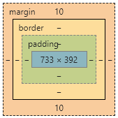
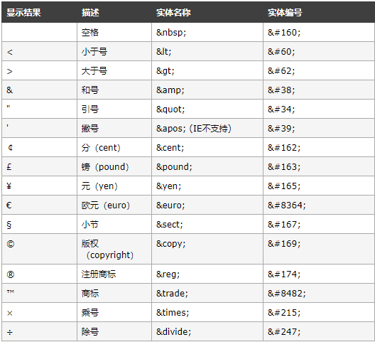

<!-- 单行注释,也可以对多行文字进行注释 --><b>加粗</b>
<i>斜体</i>
<u>下划线</u>
<s>删除线</s>
<p>段落标签</p>
<hr>：分割线
<br>：换行
<sup>上标</sup>
<sub>下标</sub>
<pre>保留当前格式样式</pre>
<strong>(粗字体)强调文本</strong>
../：返回上一级（父级）目录<h1>我是一级标题标签(最大)</h1>
<h2>我是二级标题标签</h2>
<h3>我是三级标题标签</h3>
<h4>我是四级标题标签</h4>
<h5>我是五级标题标签</h5>
<h6>我是六级标题标签(最小)</h6><ul type="disc"> <!--disc:圆点；circle：圆圈；square：方块-->
<li>列表项1</li>
<li>列表项2</li>
<li>列表项3</li>
</ul><ol type="1"> <!--1，a/A，i/I-->
<li>列表项1</li>
<li>列表项2</li>
<li>列表项3</li>
</ol><dl>
<dt>标题，图片</dt>
<dd>描述</dd>
</dl> 内嵌样式:放在<head>标签之间
语法：
<style type="text/css">
选择器名 {
属性名:属性值;
}
</style>* {
padding:0px; /*清除默认内边距*/
margin:0px; /*清除默认外边距*/
}line-height:20px; /*行高*/
text-align:center; /*对齐：Left|right|center|justify*/
text-decoration:none; /*文本修饰None：默认|underline：定义文本下的一条线|overline：定义文本上的一条线|line-through：定义穿过文本下的一条线*/
Letter-spacing:5px; /*字母之间的间距*/
Text-indent:40px; /*首行的缩进方式：px/%*/<font>字体标签</font>
<!--字体CSS属性-->
<style type="text/css">
font-size:字体大小（常用单位：px/%/em...）;
color:颜色;
font-style:字体样式;
font-family:字体系列;
font-weight:字体粗细;
</style>
例：<font size="6" color="#FF0000" face="微软雅黑">我是字体标签</font>background-color: red; /*设置背景颜色*/
background-image: url(图片路径); /*设置背景图片（图片路径没有引号包裹）*/
background-repeat: no-repeat; /*设置背景的平铺方式：Repeat-x、repeat-y、no-repeat*/
Background-attachment: Fixed; /*设置滚动：Scroll、Fixed*/
background-position: center; /*设置背景的坐标，偏移量,如left、right、center、button*/
background-position:100px -100px;
/*第一值：左右偏移量，正：向右偏移，负：向左偏移；
第二值：上下偏移量，正：向下偏移，负：向上偏移*/
background-size:cover;
/*可以为px、%、cover、continue
cover: 不会造成图片失真，会铺满整个标签。
contain: 不会造成图片失真，不会铺满整个标签。
*/
opacity: 0.5; /*设置透明度，范围0.0-1.0*/
ontline:0 none; /*清除默认边框*/<a href="网页的网址" target="_blank">超链接文字或图片</a>
_blank:在新窗口打开网页
_self:在当前自身窗口打开网页<a href="mailto:cupwang@163.com">我的邮箱</a><img src="图片地址路径" width="宽度" height="高度" alt="加载失败提示文字"
title="鼠标悬浮提示文字" border="边框大小" align="图片与周围文字的对齐方式：top/middle/bottom/left/right"
vspace="图片在垂直方向上与周围文字的间距" hspace="图片在水平方向上与周围文字的间距"/><a href="#锚点名">锚点链接：跳转链接</a>
<a name="锚点名">锚点名:要跳转到的位置</a><marquee scrolldelay="时间延时：毫秒" direction="滚动方向 up down left right">
</marquee><frameset cols="20%,*"></frameset> <!--左右分割,将左边框架分割大小为20%右边框架的大小浏览器会自动调整-->
<frameset rows="20%,*"></frameset> <!--上下分割,将上面框架分割大小为20%下面框架的大小浏览器会自动调整-->
<frameset cols="20%,*"></frameset> <!--分割左右两个框架-->
<frameset cols="20%,*,20%"></frameset> <!--分割左中右三个框架-->
<frameset rows="20%,*"></frameset> <!--分割上下两个框架-->
<frameset rows="20%,*,20%"></frameset> <!--分割上中下三个框架 -->
例：
<frameset cols="20%,*">
<frame src="1.html">
<frame src="2.html">
</frameset>块级元素：凡是默认自动占满网页整行的元素（自动换行），称为块级元素
<hr> <p> <h1>-<h6> <div> <ul> <li> <dl> <dt> <dd> <table> <pre> <tr> ...行内元素：不能占满网页整行的元素
<font> <img> <span> <a> <b> <br> <buttom> <i> <span> <sub> <sup> <select> ...tr:行； td：单元格
<table align="表格对齐方式" border="边框" bgcolor="背景颜色" height="高度" width="宽度" background="背景图片" bordercolor="边框颜色" cellspacing="单元格外边距" cellpadding="单元格内边距" colspan="合并栏(使用数字)" rowspan="合并列(使用数字)">
<tr align="文本对齐方式">
<th>表头1</th>
<th>表头2</th>
</tr>
<tr>
<td>单元格1</td>
<td>单元格2</td>
</tr>
<tr>
<td>单元格3</td>
<td>单元格4</td>
</tr>
</table>
优先级：td > tr > table
跨行：<td rowspan="2">跨2行</td>
跨列：<td colspan="2">跨2列</td>网页中所有的元素都是盒子
盒子组成部分：

content:内容 padding:内边距
border:边框 margin:外边距居中对齐：
text-align: center; /*文本居中*/
margin: 0px auto; /*盒子水平居中*/height:高度 width:宽度
padding、border、margin:都有四个方向：top、bottom、left、right;
例:
<style type="text/css">
padding-top:50px;
border-left:50px;
margin-right:50px;
</style><style type="text/css">
width:200px;/*内容宽度*/
height:150px;/*内容高度*/
border-width:25px;/*边框宽度*/
border-color:red;/*边框颜色 transparent：透明*/
border-style:solid;/*边框样式 soild：实线，dashed：线虚线，dotted：点虚线*/
</style>
<style type="text/css">
border:10px red solid;
等价于：
border-width:10px;
border-color:red;
border-style:solid;
padding-top:50px;
padding-bottom:100px;
padding-left:50px;
padding-right:100px;
padding:50px; /*内边距上下左右各50px*/
padding:50px 100px; /*第一个值:上下 第二个值:左右*/
padding:50px 30px 100px; /*第一个值:上 第二个值:左右 第三个值：下*/
padding:10px 30px 50px 100px; /*第一个值:上 第二个值:右 第三个值:下 第四个值:左 (顺时针方向)*/
</style>1、标签选择器：标签名，网页中所有这样的标签都具有相同的属性
<style type="text/css">
div {
width:300px; /*宽度*/
height:250px; /*高度*/
border-width:10px; /*边框宽度*/
border-color:red; /*边框颜色*/
border-style:solid; /*边框样式 solid：实线 dashed：虚线 dotted：点虚线*/
}2、ID选择器：#+ID名，选择网页中唯一元素，命名规则同C语言 ，关键字：id
#box2 {
border-color:blue;
}3、类选择器：.+类名，选择网页中具有相同类名的元素 ，关键字：class
.style2 {
background-color:green;
border-color:black;
border-style:dashed;
}4、伪类选择器:
a:link /* 未访问的链接 */
a:visited /* 已访问的链接 */
a:hover /* 鼠标移动到链接上 */
a:active /* 点击时的链接 */
这四种不同的状态必须按照固定的顺序写：
:link :visited :hover :active5、通配符选择器（*）
/* 清除网页默认样式 */
*{
margin: 0;
padding: 0;
}选择器优先级：
!important > ID选择器 > 类选择器 > 标签选择器 > 通配符选择器 > 继承 > 浏览器默认属性
内嵌样式：定义在该标签里面的
<div style="width:300px; height:200px; border:5px solid blue; margin:0px auto;">
<!-- 我是一个盒子 -->
</div>内部样式：定义在网页的<head>里面的
<style type="text/css">
p{
background: green;
}
</style>
<body>
<P>Hello World!</P>
</body>外部样式：定义在网页之外的CSS文本里面的
<link type="text/css" rel="stylesheet" href="css/newstyle.css"/>行内样式表 > 内嵌样式表 > 外部样式表

<form action="要提交的网页" method="post/get"> </form>
post：提交的数据不会在地址栏显示，安全性好，不限制提交数据的大小。
get：提交的数据会在地址栏显示，完全性差，限制提交数据的大小。 常见的表单元素包括文本框、按钮和下拉列表等。除下拉列表框、多行文本域等少数表单元素外，大多数表单元素均使用<input>标签，只是他们的属性设置不同，其统一用法如下：
<input name="表单元素名称" type="类型" value="值" size="显示宽度" maxlength="能输入的最大字符长度" checked="是否选中"/>
文本框： <input type="text" value="jack" maxlength="8" name="account" size="10" readonly="readonly"/>
密码框：<input type="password" maxlength="8" name="pwd" size="10"/>若要实现多个单选按钮，只选中一个，前提是保证name属性值是一样的，若多个单选按钮都有checked="checked"，以最后一个单选按钮为准。
单选按钮：<input type="radio" name="sex" value="男" checked="checked"/>
复选框：<input type="checkbox" name="hobby" value="篮球" checked="checked"/>
文件域：<input type="file" name="photo"/><select name=”指定列表的名称”size=”行数”>
<option value=”可选择的值” selected=“selected”>显示项的内容</option>
<option value=”可选择的”>显示项的内容</option>
……
</select><textarea name=”指定名称” cols=”列数” rows=”行数”>
//文本域的内容
</textarea><input type="submit" value="提交按钮的显示值" name="名称"/>
<input type="reset" value="重置按钮的显示值" name="名称"/>
<input type="button" value="普通按钮的显示值" name="名称"/>
<input type="image" src="imags/Logo.png"/><body scroll="no"> <!--去掉全部滚动条-->
<body style="overflow-y:hidden"> <!--去掉页面右边的滚动条-->
<body style="overflow:scroll; overflow-y:hidden">
<body style="overflow-x:hidden"> <!--去掉页面底部的滚动条-->
<body style="overflow:scroll; overflow-x:hidden">body {
Scrollbar-3DLight-Color: #999999; /*滚动条亮边的颜色*/
Scrollbar-Arrow-Color: #CCCCCC; /*上下按钮上三角箭头的颜色*/
Scrollbar-Base-Color: #E1E1E1; /*滚动条的基本颜色*/
Scrollbar-Shadow-Color: #CCCCCC; /*立体滚动条阴影的颜色*/
Scrollbar-DarkShadow-Color: #333333; /*滚动条动条阴影的颜色*/
Scrollbar-Face-Color: #999999; /*滚动条凸出部分的颜色*/
Scrollbar-Highlight-Color: #F2F2F2; /*滚动条空白部分的颜色*/
Scrollbar-Track-Color: #F2F2F2; /*滚动条的背景颜色*/
}CSS在线速查API：http://css.cuishifeng.cn/
Html+CSS离线API文档：https://www.lanzous.com/i6jyhab